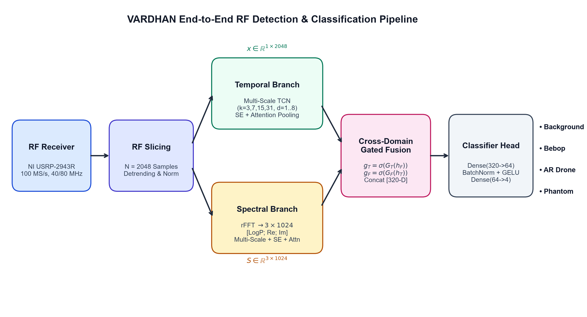
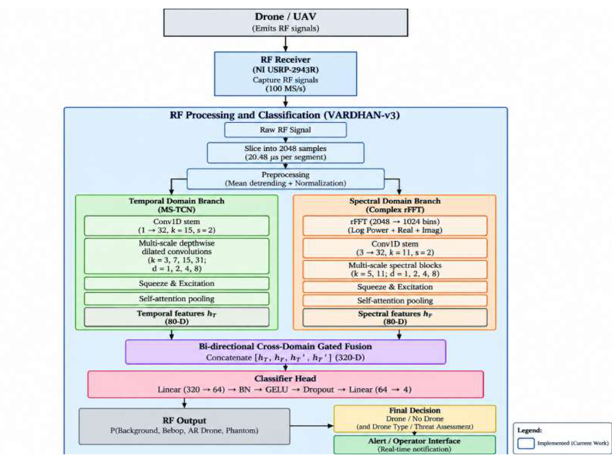

VARDHAN RF Models
VARDHAN is the project’s own family of lightweight RF classifiers. It evolved through three versions. Each redesign was driven by a documented failure analysis of the previous version.
| Version | Source file | Key idea | Parameters | Status |
|---|---|---|---|---|
| VARDHAN-v1 | src/models/vardhan.py (VardhanRFNet) | Dual-branch dilated 1-D CNN on raw waveform | 6,692 | Legacy prototype; majority-class collapse |
| VARDHAN-v2A | src/models/vardhan_v2a.py (VardhanV2A) | Tri-branch temporal + fine spectral + sub-band, attention pooling | 69,559 | Intermediate design |
| VARDHAN-v3 | src/models/vardhan_v3.py (VardhanV3) | Dual-domain multi-scale network with SE attention and cross-domain gated fusion | 119,806 | Final proposed model |
1. VARDHAN-v1 (Legacy Prototype)
VARDHAN-v1 was the first lightweight prototype. It applies two shallow convolutional branches to a single-channel normalised waveform and collapses the result by global average pooling.
Input (1, 2048) raw waveform, global train-split Z-score
Branch 1: Conv1d(1 -> 16, k=3) -> Conv1d(16 -> 32, k=3, dilation=2)
Branch 2: Conv1d(1 -> 16, k=7) -> Conv1d(16 -> 32, k=5)
Concat (64) -> BatchNorm1d -> MaxPool1d(4) -> AdaptiveAvgPool1d(1)
Linear(64 -> 32) -> Dropout(0.3) -> Linear(32 -> 4)
Trainable parameters: 6,692
Maximum receptive field: 11 samplesForensic audit
A forensic audit (reports/vardhan_v1_forensic_audit.md) examined v1’s strict recording-level result (seed 42, 2 segments per test file, N = 146 test segments). The 28.77% accuracy was found to be entirely due to majority-class collapse: every test segment was predicted as Bebop, whose test prevalence is exactly 42/146 = 28.77%.
| True \ Predicted | Background | AR | Bebop | Phantom | Total |
|---|---|---|---|---|---|
| Background | 0 | 0 | 40 | 0 | 40 |
| AR | 0 | 0 | 42 | 0 | 42 |
| Bebop | 0 | 0 | 42 | 0 | 42 |
| Phantom | 0 | 0 | 22 | 0 | 22 |
Accuracy 28.77%, macro-F1 0.1117, macro precision 0.0719, macro recall 0.2500, test loss 1.4699. Training accuracy stayed at about 41%, matching the Bebop share of the training set (126/308 = 40.91%), and validation loss remained near the four-class chance level (ln 4 ≈ 1.386). The model was underfitting, not overfitting.
Root causes identified
- Global average pooling (
AdaptiveAvgPool1d(1)) averages all 512 temporal feature vectors into one, erasing burst timing and sequence structure. - Tiny receptive field – 7 and 11 samples on the two branches, far too short to resolve RF modulation and packet structure.
- Insufficient capacity – 6,692 parameters.
- No explicit spectral information – no Fourier, complex or multi-band input.
2. VARDHAN-v2A (Intermediate Design)
VARDHAN-v2A (reports/vardhan_v2a_architecture_design.md) addressed each v1 failure while keeping the same single-file (B, 1, 2048) input contract. It introduced three complementary branches, each ending in learnable attention pooling instead of global average pooling, and widened the temporal receptive field from 11 to 1,035 samples (about 94×) within a 50k–150k parameter budget.
Input (1, 2048) -> DC detrending
|
+-- Branch 1: Temporal multi-scale TCN (26,097 params)
| Stem Conv1d(1 -> 32, k=15, s=2, p=7)
| TemporalBlock(32 -> 48, k=7, s=2, d=1) RF = 27
| TemporalBlock(48 -> 64, k=7, s=2, d=2) RF = 75
| TemporalBlock(64 -> 64, k=7, s=2, d=4) RF = 267
| TemporalBlock(64 -> 64, k=7, s=1, d=8) RF = 1,035
| AttentionPool1d(64) -> h_T (64)
|
+-- Branch 2: Fine-grained spectrum (rFFT power, 1024 bins) (16,913 params)
| Stem Conv1d(1 -> 32, k=11, s=2, p=5)
| 3 x ResidualBlock, dilations {1, 2, 4}
| AttentionPool1d(64) -> h_F (64)
|
+-- Branch 3: Coarse sub-band spectrum (8 x 128 bins) (13,809 params)
| Stem Conv1d(8 -> 32, k=7, s=1, p=3)
| 2 x ResidualBlock
| AttentionPool1d(64) -> h_M (64)
|
Fusion head (12,740 params)
Concat [h_T; h_F; h_M] (192) -> Linear(192 -> 64) + BatchNorm + GELU
Dropout(0.2) -> Linear(64 -> 4)
Total trainable parameters: 69,559| Component | Parameters | Share |
|---|---|---|
| Temporal branch | 26,097 | 37.52% |
| Fine-grained spectral branch | 16,913 | 24.31% |
| Coarse sub-band branch | 13,809 | 19.85% |
| Fusion head | 12,740 | 18.32% |
| Total | 69,559 | 100.00% |
Learnable attention pooling
For a feature sequence ht, attention weights are computed and used for a weighted sum, letting the network focus on informative bursts:
at = softmaxt( W2 · tanh(W1ht + b1) + b2 ), hpooled = Σt at · ht
Each pooling module costs 2,065 parameters (6,195 across the three branches). The temporal receptive field of 1,035 samples (25.88 µs) covers 50.54% of the 2048-sample window.
Planned ablation
| Experiment | Model | Parameters | Objective |
|---|---|---|---|
| A | VARDHAN-v1 (time only) | 6,692 | Reference baseline |
| B | Time + attention | ~30,645 | Isolate temporal improvements |
| C | Time + FFT | ~51,654 | Measure spectral gain |
| D | Full VARDHAN-v2A | 69,559 | Multi-representation fusion |
Training scripts: scripts/train_vardhan_v2a.py (strict) and scripts/train_vardhan_v2a_standardized.py (10-fold); structural check: scripts/verify_vardhan_v2a.py.
3. VARDHAN-v3 (Final Proposed Architecture)
VARDHAN-v3, the Multi-Scale Dual-Domain RF-Net, processes each raw 2048-sample waveform through two complementary backbones: a multi-scale temporal network and a multi-scale spectral network fed by the three-channel Fourier representation (log power, real and imaginary parts). The two embeddings are pooled with learnable attention and combined by bi-directional cross-domain gating, in which each domain modulates the other.


Layer specification
Input x: (B, 1, 2048) raw waveform, per-segment normalised
TEMPORAL BACKBONE (multi-scale TCN)
Stem Conv1d(1 -> 32, k=15, s=2, p=7) + BatchNorm + GELU -> (B, 32, 1024)
T1 MultiScaleTemporalBlock(32 -> 48, s=2, d=1) -> (B, 48, 512)
T2 MultiScaleTemporalBlock(48 -> 64, s=2, d=2) -> (B, 64, 256)
T3 MultiScaleTemporalBlock(64 -> 80, s=2, d=4) -> (B, 80, 128)
T4 MultiScaleTemporalBlock(80 -> 80, s=1, d=8) -> (B, 80, 128)
Pool AttentionPool1d(80 -> 40 -> 1) -> h_T (B, 80)
Block: channels split into 4 groups, parallel depthwise convs k = 3, 7, 15, 31
-> pointwise conv -> BatchNorm -> GELU -> Squeeze-Excitation -> + residual
SPECTRAL BACKBONE (input computed inside the model)
Spectrum detrend -> rFFT(2048) -> drop DC -> [log power, Re, Im] -> (B, 3, 1024)
Stem Conv1d(3 -> 32, k=11, s=2, p=5) + BatchNorm + GELU -> (B, 32, 512)
F1 MultiScaleSpectralBlock(32 -> 48, s=2, d=1) -> (B, 48, 256)
F2 MultiScaleSpectralBlock(48 -> 64, s=2, d=2) -> (B, 64, 128)
F3 MultiScaleSpectralBlock(64 -> 80, s=1, d=4) -> (B, 80, 128)
F4 MultiScaleSpectralBlock(80 -> 80, s=1, d=8) -> (B, 80, 128)
Pool AttentionPool1d(80 -> 40 -> 1) -> h_F (B, 80)
Block: channels split into 2 groups, parallel depthwise convs k = 5, 11
-> pointwise conv -> BatchNorm -> GELU -> Squeeze-Excitation -> + residual
CROSS-DOMAIN GATED FUSION AND HEAD
g_T = sigmoid(Linear(40 -> 80)(GELU(Linear(80 -> 40)(h_F)))) temporal gate from spectral context
g_F = sigmoid(Linear(40 -> 80)(GELU(Linear(80 -> 40)(h_T)))) spectral gate from temporal context
h_cat = [h_T, h_F, h_T * g_T, h_F * g_F] -> (B, 320)
Linear(320 -> 64) + BatchNorm + GELU + Dropout(0.2) -> Linear(64 -> 4) -> logitsDesign rationale
- Multi-scale depthwise kernels (3/7/15/31 samples) capture micro-transients, carrier cycles, symbol preambles and packet envelopes in parallel at low cost.
- Dilation schedule {1, 2, 4, 8} with striding widens the receptive field without adding parameters.
- Squeeze-and-Excitation re-weights channels using global context (reduction 4, minimum 8 hidden units).
- Complex spectral input keeps phase information (real and imaginary parts), which the power spectrum used by the baselines discards.
- Attention pooling replaces the global average pooling that caused v1 to collapse.
- Bi-directional gating lets each domain suppress or emphasise features in the other before classification.
Parameter budget
| Component | Parameters |
|---|---|
| Temporal stem | 544 |
| Temporal blocks T1–T4 (4,828 + 9,072 + 14,596 + 10,980) | 39,476 |
| Temporal attention pooling | 3,281 |
| Spectral stem | 1,120 |
| Spectral blocks F1–F4 (4,636 + 8,784 + 14,212 + 10,500) | 38,132 |
| Spectral attention pooling | 3,281 |
| Cross-domain gates (gT, gF) | 13,040 |
| Classifier head (Linear 320→64, BatchNorm, Linear 64→4) | 20,932 |
| Total | 119,806 |
Of the block parameters, Squeeze-and-Excitation modules account for 19,880 (9,940 per backbone).
Computational footprint
| Trainable parameters | 119,806 |
|---|---|
| Multiply–accumulates per inference | 11.81 M MACs (theoretical, as reported) |
| Floating-point operations | 23.63 M FLOPs (theoretical, as reported) |
| Weight storage (FP32) | ≈ 479 KB (119,806 × 4 bytes); within the 512 KB model-size target in configs/evaluation.yaml |
| Weight storage (INT8) | ≈ 120 KB (theoretical; quantisation not yet evaluated) |
| Latency target | < 5 ms per 2048-sample segment (design target; not measured on embedded hardware, which is out of scope) |
Training configuration
| Setting | 10-fold segment-level | Strict recording-level |
|---|---|---|
| Optimiser | AdamW (β = 0.9, 0.999), weight decay 1×10−4 | |
| Learning rate | 3×10−4, cosine annealing to 1×10−6 | |
| Loss | Cross-entropy with label smoothing 0.05, no class weighting | |
| Batch size | 32 | |
| Normalisation | Per-segment | |
| Epochs | 15 per fold | 100 (best checkpoint by minimum validation loss) |
| Seed | 1 | 42 |
| Data | 22,700 segments, 10 stratified folds | 50 segments per file |
| Hardware | NVIDIA Tesla T4 (total 10-fold time 2,265 s) | – |
| Script | scripts/train_vardhan_v3_standardized.py | scripts/train_vardhan_v3.py |
Results for VARDHAN-v3 are reported on the Results page.